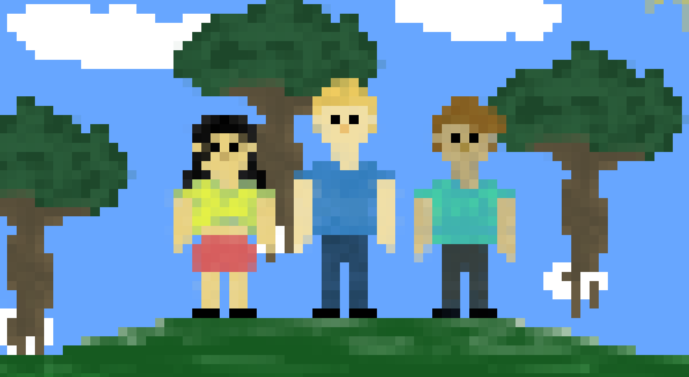

Recently online gaming relationships have become more normal. A lot of people find new friends or their chosen one through online gaming. “They Found Community, and Then Love, in Online Games” is an article on WIRED, they shared people’s experiences with finding love through games. Of course, everyone doesn’t find love through games, but something else. They find friendship and a community to be a part of. It is no wonder that they think online gaming is fun, you know that when they spend ours doing it, but it is also important that they know the dangers and challenges that comes with.
The Positive
Online gaming allows kids to find new friends, even if they are not that social at school or at home. For some people it is easier to socialize in games or just through a screen where they are anonymous because you don’t have to worry about what they think of you and how you behave.
 Most games are in English, and as a result gamers will have a larger English vocabulary than non-gamers. I used to play a lot of Minecraft when I was younger, and that is where most of my English comes from, because you will eventually learn the names of the different blocks that you are building with. Although games are a fun way to learn a language, you won’t get all the way with just games.
Most games are in English, and as a result gamers will have a larger English vocabulary than non-gamers. I used to play a lot of Minecraft when I was younger, and that is where most of my English comes from, because you will eventually learn the names of the different blocks that you are building with. Although games are a fun way to learn a language, you won’t get all the way with just games.
Games have also proven to be a more engaging way for kids to learn and develop new skills. For example, talking to strangers, eye-to-hand coordination, strategic thinking, and creativity. These are just a few examples; you can go to this website to read more about the benefits and skills you can gain from online gaming.
The Negative
A negative effect of gaming is that it might introduce you to toxic people and cuss words. A lot of racist and sexist words are casually being thrown around in games. Words like bitch and fuck are pretty common words I hear when I play online games. I believe a reason for this is because some people get more immersed than others, and gaming becomes more than just gaming. It is important that you know your children will be exposed to words like these.
Gaming is a lot of fun, but also highly addictive. It is extremely important to take care of yourself even when you are playing. A lot of young gamers forget to sleep, and even eat, that is why it is important to notice when gaming takes over your life and when it becomes a too big part of your life. If you want to read more about video game addictions, you can click here.

Another negative side of online gaming is the liars and scammers out there. Scammers are an issue not only in online gaming, but everywhere on the internet. These scammers often target your account or your items. They usually get what they want by making you type your email address and your password, then they change the password and username after they get the account, so you won’t get back in.